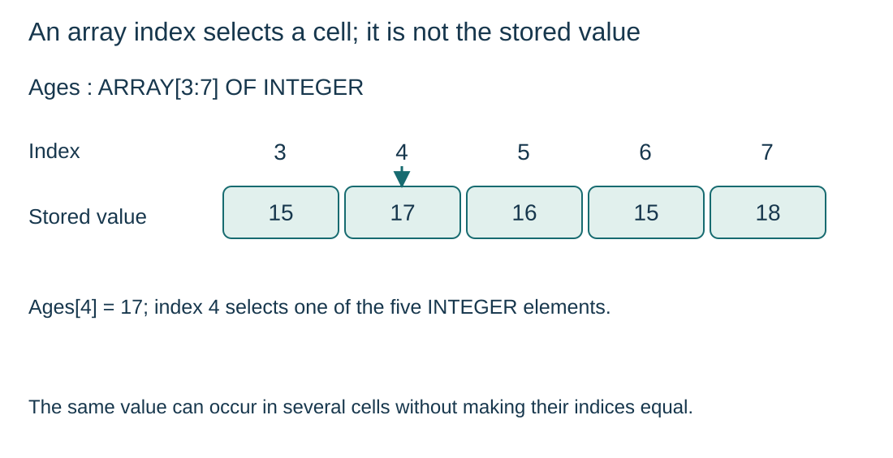

Distinguish the array, an element and an index
S10.03.A01
Visual overview
An array index selects a cell; it is not the stored value

Visual transcript
- Ages is ARRAY[3:7] OF INTEGER with values 15, 17, 16, 15, 18.
- Ages[4] selects the cell at index 4 and reads the value 17.
- Inclusive capacity is 7 - 3 + 1 = 5. The indices need not begin at 0 or 1.
Core explanation
Distinguish the parts of an array access
- Array identifier: Names a collection of elements with the same declared data type.
- Index: Selects a particular element: in Ages[4], the index is 4.
- Value: The selected element might store 17. That value is independent of its index.
Dimensions, bounds and initialisation
A 1D array uses one index; a 2D array uses two. Every position has the declared element type and must receive a value before the algorithm relies on it. Declared bounds determine valid indices, even when the lower bound is 3 rather than 0 or 1.
Worked example · Read and replace one element
- Read
Ages[4] is 17. The index is 4, not 17.
- Assignment
Ages[4] <- Ages[3] + 2 stores 17 at index 4 and leaves Ages[3] unchanged.
- Result
Only the selected element is overwritten; the declared bounds remain 3 and 7.